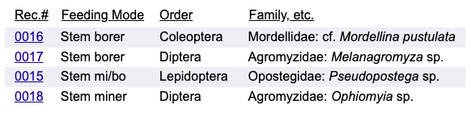
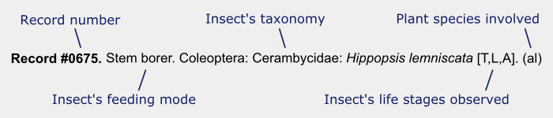

Data presentation, abbreviations and other notation
"Quick Reference List" section
This website includes a certain type of page that brings together information about multiple species of insects who dwell in the tissues of plants belonging to a single genus or species. For example, Ageratina stem insects discusses all the insects found by the author in stems and stemlike structures of plants in the genus Ageratina. At the top of such a page, a Quick Reference List may be provided. The goal of this list (which is presented in table form) is to summarize the larval life history and taxonomy of each insect at a glance.
What does a Quick Reference List look like?
A typical list looks like this:
What do the different columns mean?
Columns are as follows:
- Column 1: Record number (e.g., "0016"). Each relationship between an insect species and a plant species observed in the current study has been assigned a unique four-digit record number.
- Column 2: Feeding mode (e.g., "Stem borer"). This is the type of feeding behavior the insect exhibits as a larva. To conserve limited space in the Quick Reference List table, feeding modes are given in shorthand, as 8- to 10-character codes. Here is a list of the codes used and the feeding modes to which they refer:
The full description of the insect's feeding mode is always given in the "Record Details" section of the page, below the Quick Reference List.Feeding mode code Full description of feeding mode Stem borer Stem borer Stem miner Stem miner Stem mi/bo Stem miner/borer Borer-MP Borer in midrib/petiole or rachis Borer-MPSt Borer in midrib/petiole or rachis and in stem Miner-MP Miner in midrib/petiole or rachis Miner-MPSt Miner in midrib/petiole or rachis and in stem Mi/bo-MP Miner/borer in midrib/petiole or rachis Mi/bo-MPSt Miner/borer in midrib/petiole or rachis and in stem Local-Stem Local feeder in stem Local-MP Local feeder in midrib/petiole Local-MPSt Local feeder, may be found in midrib/petiole or stem - Column 3: Order (e.g., "Coleoptera"). The taxonomic order to which the insect belongs, if known.
- Column 4: Family etc. (e.g., "Mordellidae: cf. Mordellina pustulata"). Further details of the insect's taxonomy, given as a list beginning with superfamily or family and continuing through to genus and species, if known.
How is the Quick Reference List sorted?
Entries in the list are sorted (1) broadly by feeding mode, with borers listed first, followed by miners, followed by local feeders; then (2) alphabetically by insect order; then (3) alphabetically by insect family.
What other forms of notation are used in the list?
The following additional forms of notation may also appear in a Quick Reference List:
- A plus sign (+) after a record number (e.g., "0030+") indicates that the current row in the table, and the corresponding listing in the "Record Details" section, represents a grouping of mutiple records (including the one given by the four-digit number), not just a single record. This happens when several closely-related records have been grouped together by the author so they can be described in a single effort.
- A plus sign (+) after a feeding mode code (e.g., "Stem borer+") indicates the insect has been observed in other modes but the vast majority of feeding occurs in the given mode.
- A few characters of text followed by a space and a period (e.g., "Internal .") indicates a feeding mode to which a code had not been assigned, and the full description of the feeding mode has simply been abbreviated to an eight-character limit so that it fits neatly in the table. The full description of the feeding mode may be found in the "Record Details" section, further down on the page.
"Record Details" section
Pages with a Quick Reference List at the top (see above) will usually also have a "Record Details" section. In this section, further details are given about all the records shown in the table. A typical listing in this section consists of a first line summarizing the record, followed by a longer written description. Here is what a typical first-line record summary looks like, broken down into its different parts:
The life stages observed are given as a list of one-letter abbreviations within square brackets [ ]. In the example above, the abbreviations are "T", "L," and "A". Up to five such abbreviations may be used, and they stand for the following:
- T: Trace; tunnel, mine, gall, or other damage to plant / feeding sign
- E: Egg
- L: Larva
- P: Pupa / Puparium
- A: Adult (reared, unless otherwise noted)
Thus, in the example above, the trace / feeding sign, larva, and adult of Hippopsis lemniscata were all observed as part of the current study. Unless otherwise noted, "A" refers to a reared adult.
The plant species is given as a two-letter code within parentheses ( ). This is usually done when the scope of the page is an entire plant genus, so that the various records can be described without cluttering the page by repeatedly listing the full names of the plant species involved in each record. In the example above, the code is "al". The plant species and their corresponding codes are then listed in a section at the end of the document, like this:
Hostplant species codes:
- al - A. altissima (white snakeroot)
Letters in brackets (e.g., "[T,E,L,P,A]") in insect species reports
This notation indicates the life stages of the insect that have been observed as part of the current study. The notation is identical to that used in the record summaries in some pages' "Record Details" sections (see above). The life stages observed are given as a list of one-letter abbreviations within square brackets [ ]. Up to five such abbreviations may be used, and they stand for the following:
- T: Trace; tunnel, mine, gall, or other damage to plant / feeding sign
- E: Egg
- L: Larva
- P: Pupa / Puparium
- A: Adult (reared, unless otherwise noted)
Thus, if the notation given were "[T,P,A]", then the trace / feeding sign, pupa, and adult of the insect would have all been observed as part of the current study. Unless otherwise noted, "A" refers to a reared adult.